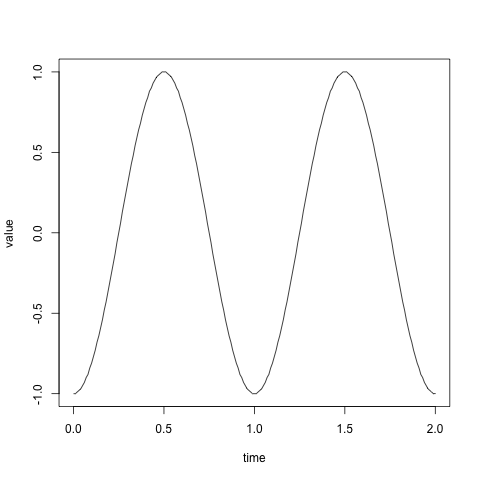

WIP: HTM Cortical Learning Algorithm
The Hierarchical Temporal Memory Cortical Learning Algorithm1 is an algorithm that is based on the neocortex. It tries to predict the future based on patterns it finds in the past input. This document is a way for me to learn more about it and how it is implemented.
Introduction
I am not going to do a full and general implementation of the
algorithm. I only want to see that I have fully understood the ideas
and that I am able to reason about it. I am going to implement it in
R. The reason for using R is that I need some practice in it
because I am supposed to use it for my research.
Since the algorithm is supposed to work on time series data I think
that the simplest way to test this is to see if it is able to learn
a simple sinusoid. It develops over time and is very
regular. Getting a list of the values at each discreet time is quite
easy in R, we can do it with the following code:
x <- seq(0, 2, by = 0.01) y <- round(sin(2 * pi * (x - 1/4)), 2) plot(x, y, xlab = 'time', ylab = 'value', type='l')

In the code above I define the values of the x-axis on line 1 as
between 0 and 2 with a step of 0.01, this makes
201 values and is two
full revolutions of the sinusoid. On line 2 I calculate the value
of y at every point of x. You might have noticed that I round
the value to 2 decimal points. I did this just to have fewer values
to worry about later.
Representation
For the HTM to be able to process the sinusoid we need to convert the values into a format the the HTM can read. The HTM needs a sparse distributed representation of the input. It is a large number of bits, but the normal dense way of representing values in bits is not possible. By dense it is meant where f.ex. the left-most bit is significant and represents an increase in the value by a power of 2. We need every bit to be as significant as the others. I think this is because every bit needs to have the chance of activating the same amount of the time. This does not mean that every bit will activate at the same frequency.
buckets <- unique(y) w <- 3 bits <- length(buckets) + w - 1
On line 1 I take all the unique values on the y-axis and
make them into the buckets that we are going to use for the
values. I want for each value to activate 3 bits in the input vector
for the HTM.
to.vector <- function(value) { result <- rep(0, length(buckets)) n <- match(value, buckets) for (i in 0:(w-1)) { result[i+n] <- 1 } return(result) }
Initialization of HTM
htm <- list( cells = 16, columns = 10, permanence = 0.3, overlap = 10, activity = 0.1) htm$synapses <- round( matrix( data = runif(htm$columns*bits), nrow = bits, ncol = htm$columns)) htm$synapses <- htm$synapses * runif(bits*htm$columns, htm$permanence-0.1, htm$permanence+0.1) htm$boost <- rep(1, htm$columns)
On line 1 you might have noticed that I am just using a
list. This is just because I can access the fields with $ and not
have to worry about creating a class.
What I am doing at line 8 is that I am trying to create a matrix over the synapses for each column. Each column has a 50% chance of selecting any of the inputs as connected. The connected synapses then have a permanence score added to the synapse. The permanence score is between -0.1 and 0.1 of the permanence score of the htm.
Spatial Pooling
Phase 1: Overlap
overlap <- function(htm) { ov <- ifelse(htm$synapses > htm$permanence, 1, 0) ov <- apply(ov, 2, sum) ov <- ifelse(ov < htm$overlap, 0, ov) return(ov * htm$boost) }
Phase 2: Inhibition
Phase 3: Learning
Temporal Pooling
Phase 1: Active State
Phase 2: Predictive State
Phase 3: Learning
Source code
Footnotes:
That is a mouth full.